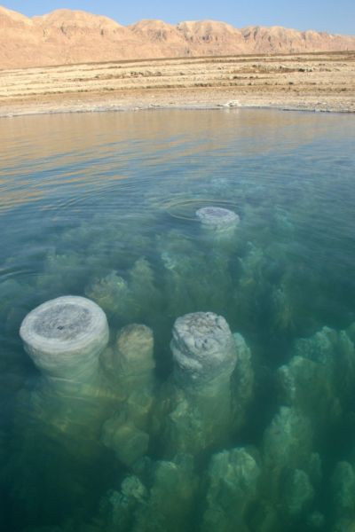
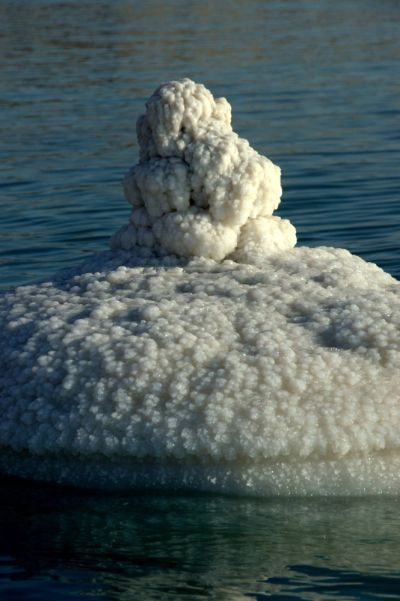

On a September morning in 2016 - at sunrise - I captured this unique salt formation. As I got near enough to photograph it, I suddenly realized that I had documented this same formation only 5 months before,while it was mostly under water
Lowest place on earth
I have always loved this mystic and spiritual sea in Israel - at the lowest place on earth.
Having spent the last decade photographing all over the world and working here in Israel as a photojournalist, documenting the human drama in Sderot - on the Gaza border - I am now blessed with the opportunity to focus on documenting this enchanted place, which has, by the way, been nominated as a “World Heritage” site.
Salt treasures
Getting off shore and walking on these exotic salt beaches I can’t stop thinking that I’m one of the first people ever to set foot on these ‘new born’ beaches, uncovered only weeks ago. The beaches and formations still surrounded by water are treasures of this mysterious salty sea.
These salt treasures can be found in many shapes and layer formations - Salt Mosaic Carpets, Salt Pearls (perfectly round as a large pearl), ‘Salt Diamonds’, ‘Salt Stelac-tite’, preserved Salt Caves and Salt Chimneys.

Natural beauty
With all this natural beauty and magic comes the tragic part of the story. Once any treasure is no longer covered by the water, it dries out under the sun and eventually crumbles and disappears...
Water level
In the 20th century the water level of the Dead Sea went down over 35 meters and today it is minus 420 meters below sea level. Scientist are saying that by the year 2050, only a little pool of salt will remain.

The damage
800 million cubic meters are evaporated each year, that’s over 2 million cubic meters of water a day. The estimated costs of direct damage sums up to 90 million US dollars a year.
The Dead Sea’s Treasures Exploration Boat
Over the next few years I will continue to take delegations from Israel and abroad on a unique awareness boat ride, where we will explore new geological phenomena and measure the water level. We can reach areas that are only accessible by this boat, and therefore, I can show these wonders to the world in ways never done before. When was the last time anyone can say that they’ve ‘rode the waves’ on the Dead Sea?
We need to think about the next generation and preserving the heritage of the Land of Israel - caring for what we want to hand over to them.
Noam, an Israeli photojournalist and international speaker, has over a decade of experience in presenting challenges facing the State of Israel . He is currently focused on the magnificent, magical and endangered Dead Sea – the changes it is undergoing and the healing that is necessary.
Based on thousands of photographs taken over the course of 18 months, Noam now offers photo exhibitions and multimedia presentations. The photos are taken on exclusive boat expeditions that you can participate in. Professionals and tourists from around the globe have joined him on these excursions.
For more information on multimedia presentations and/or reservations for boat excursions on the Dead Sea, please contact him at: